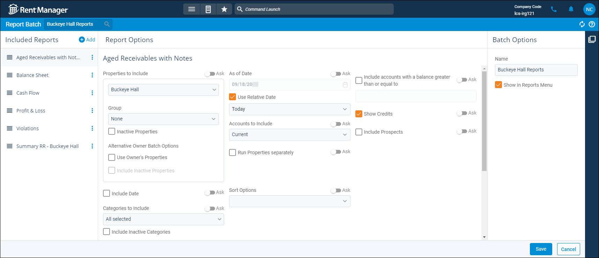
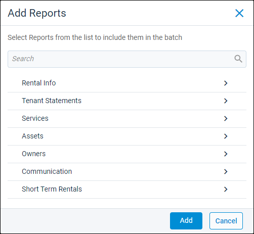

Source: https://rmxhelp.rentmanager.com/Topics/Express/Other/Report-Batch-Add.htm
Add Report Batches
A report batch is a collection of reports that can be generated simultaneously to save time and increase efficiency. The report options of each report within the batch can be configured to generate the report automatically with little to no input from the user. Report batches can also be scheduled to generate at a certain time and date, then emailed to the specified addresses.
Related Privileges
| Group | Privilege | Column |
|---|---|---|
| Letter/Email Templates/Reports/Packets | Run reports | Enabled |
Additionally, on the Reports tab, you must have access to the corresponding reports you wish to add to the batch.
For more information, refer to Control User Access.
To create a new report batch, go to  arrow_forward
arrow_forward  Manage Batches and click
Manage Batches and click  Add Batch.
Add Batch.

Step 1: Add Reports to the Batch
To add reports to the batch, do the following:
-
In the Included Reports section, click
 Add.
Add.
-
Search or navigate to each report you wish to include, then click on the report to add it to the Reports to Add section. You can add the same report multiple times if you need to send different versions of a single report in the same batch.
-
When all the desired reports are added to Reports to Add, click Add.
The reports are added in the order selected to the Report Batch page.
Step 2: Customize Order and Report Options
To change the order of reports and establish the options used when generating the batch, do the following:
-
To re-order the reports in the Included Reports section, click and drag
 next to each report.
next to each report. -
Select each report in the Included Reports section and configure the Report Options.
More Information
Selecting singular dates (mm/dd/yyyy) causes the report to run with the exact same date(s) each time it is run. To ensure the report date updates based on the day the batch is run, use any of the options listed under Use relative date.
-
Toggle Ask next to a report option to prompt users for a value when generating this batch. Toggling Ask next to any report option prevents the report batch from being automated.
-
Once Report Options for all reports are configured, enter a Name for this report batch in the Batch Options section.
-
To enable this report to display on
 arrow_forward Report Batches, select Show in Reports Menu.
arrow_forward Report Batches, select Show in Reports Menu. -
Click Save.
The new report batch is added to the Report Batches page.